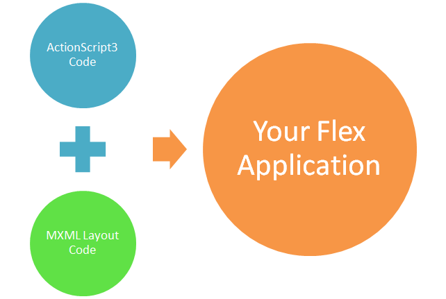

About Apache Flex
What does it do?
Flex is a powerful, open source application framework that allows you to easily build mobile applications for iOS, Android™, and BlackBerry® Tablet OS devices, as well as traditional applications for browser and desktop using the same programming model, tool, and codebase.
You can use the Flex SDK to create a wide range of highly interactive, expressive applications. For example, a data visualization application built in Flex can pull data from multiple back-end sources and display it visually. Business users can drill down into the data for deeper insight and even change the data and have it automatically updated on the back end. A product configuration application can help customers navigate the process of selecting or customizing products online. And a self-service application can guide customers through an address change or help employees complete an otherwise complicated multi-step benefits enrollment.
Enterprise-class programming model
Use constructs like strong typing, inheritance, and interfaces to program more efficiently. Extensive mobile and traditional components help speed development. Flex applications can access device capabilities such as GPS, accelerometer, camera, and local database.
Cross-platform and native experience
Create applications that run consistently across Android, BlackBerry Tablet OS, and iOS devices, as well as inside the browser and on traditional desktop computers. Although cross platform, with Flex you get an uncompromised native experience on each platform.
End-to-end tooling
Build Flex applications more easily using Adobe Flash Builder, PowerFlasher FDT, Flash Develop or JetBrains IntelliJ IDEA. Productivity features in most IDEs include on-device debugging and mobile simulators for testing across screen sizes and resolutions. You can even use our command-line tooling with your favorite text editor!
Server integration
Integrate with all major back ends including Java™, Spring, Hibernate, PHP, Ruby, .NET, Adobe ColdFusion®, and SAP using industry standards such as REST, SOAP, JSON, JMS, and AMF.
Contribute to Apache Flex!
We need you!
Apache Flex is a project run by professionals and volunteers alike. If you would like to help the project including contributing code, documentation, training or marketing, we are always looking for help.
Find out moreHow it works
Apache Flex is comprised of a few different components. One component is the compiler which combines MXML (layout) documents with ActionScript files to output a SWF application.
You can then either publish the SWF file as a stand-alone application to be presented by the Adobe Flash Player in the browser, OR you can compile it with Adobe AIR to make native applications on Windows, MacOSX, Android, iOS, or BlackBerry platforms.
Flex includes:
- a large set of skinnable user-interface components with a component lifecycle
- a set of services (HTTPService, WebService, RemoteObject)
- has Managers to handle:
- Styling
- Skinning
- Layout
- Localization
- Animation
- Module-loading
- User interaction management
- has accessibility support
- Flex has an Automation-Testing Framework
- Flex SDK provides a compiler
Typical Workflow
- Define an application interface using a set of pre-defined components (forms, buttons, and so on)
- Arrange components into a user interface design
- Use styles and themes to define the visual design
- Add dynamic behavior (one part of the application interacting with another, for example)
- Define and connect to data services as needed